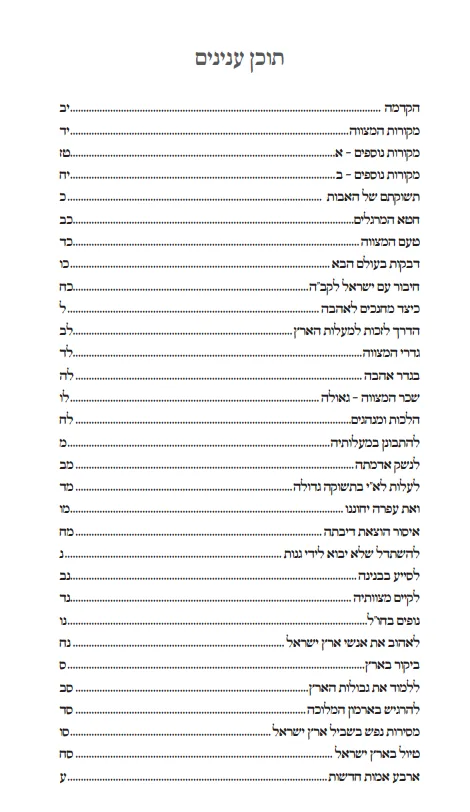

ספר נפלא הליכות וסיפורים באהבת הארץ
לראשונה בהיסטוריה
כיצד אוהבים את ארץ ישראל?
למעלה מ 50 הנהגות והליכות בהם נהגו גדולי ישראל
לעורר ולבטא את החיבה לארץ

החוברת בת 144 עמודים
הלכה מול סיפור
הלכה מול סיפור
חיבת הארץ - דוגמא.pdf
מצות חיבת הארץ לאוצר החכמה ולמייל.pdf